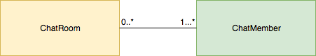
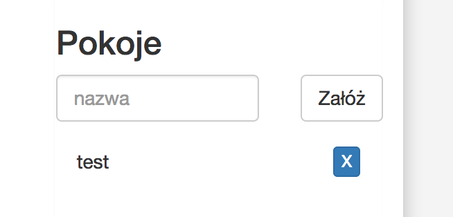

python3.6 -m venv ve
source ve/bin/activate
pip install -r requirements.pipcd projekt
pytest tests.pytests.py F
=========================================== FAILURES ===========================================
______________________________ test_receives_sent_message[pyloop] ______________________________
test_client = .go at 0x106339400>
async def test_receives_sent_message(test_client):
client = await test_client(app)
connection = await client.ws_connect('/ws?nickname=JohnDoe')
message = 'Hello, world!'
connection.send_str(message)
response = await connection.receive_str()
> assert response == message
E AssertionError: assert 'response from a server' == 'Hello, world!'
E - response from a server
E + Hello, world!
tests/test_websocket.py:12: AssertionError
----------------------------------- Captured stdout teardown -----------------------------------
websocket connection closed
=================================== 1 failed in 0.07 seconds =================================== Fail jedynego testu jest ok - już wkrótce sprawimy, by przechodził.
| Protokół/metoda HTTP | URL | Pola w ciele żądania | Opis |
|---|---|---|---|
websocket |
/ws |
- | Jedyny endpoint websocket dla czatu, przekazuje wiadomości od/do uczestnika |
POST |
room?nickname=NICK |
name - nazwa pokoju |
Zakładanie pokoju przez użytkownika o nicku NICK |
POST |
leave-room?nickname=NICK |
name - nazwa pokoju |
opuszczanie pokoju przez użytkownika o nicku NICK |
POST |
join-room?nickname=NICK |
name - nazwa pokoju |
dołączenie do pokoju przez użytkownika o nicku NICK |
GET |
rooms?nickname=NICK |
- | Pobranie listy pokojów jako użytkownik o nicku NICK |
GET |
members?nickname=NICK |
- | Pobranie listy uczestników czatu |
async def anyhandler(request):
nickname = request.GET['nickname'] # obiekt podobny do dict'a, parametry z URLa
room_name = request.POST['name'] # obiekt podobny do dict'a, parametry z ciała w żądaniu POSTasync def test_http_methods(test_client):
client = await test_client(app)
# types of requests used in this workshop
response = await client.get('/')
another_response = await client.post('/', data={'name': 'name of the room'})
assert response.status == 200
text = await response.text()
json = await another_response.json()
W pierwszej części zajmiemy się oprogramowaniem pokoju ogólnego - miejsca, gdzie każdy z uczestnikow czatu może się udzielać i czytać przychodzące wiadomości.
Zanim zaczniemy implementację, zapoznajmy się z dostarczonymi plikami projektu.
Otwórz plik index.htmlW tym pliku mamy zaimplementowaną część frontendową naszej aplikacji. Zawiera logikę obsługi WebSocketu, odbieranie i wysyłanie wiadomości. Ta część jest dostarczona w całości przez organizatora warsztatów. Nie ma żadnej potrzeby zmieniania tu czegokolwiek podczas trwania warsztatów. Poza tym, jest to kod tylko-do-zapisu, więc nie poleca się dogłębnie go analizować ;)
Otwórz plik app.pyTutaj znajduje się główny kod aplikacji. W trakcie warsztatów szczególnie będzie nas interesować funkcja websocket_handler, w której będzie następować implementacja większości potrzebnych nam rzeczy:
async def websocket_handler(request):
ws = web.WebSocketResponse()
await ws.prepare(request) # przełączenie połączenia w tryb websocket
# ws.close() - closes connection
# ws.send_str(str) - sends a str
async for msg in ws:
# msg.type - type of a message. See WSMsgType
# msg.data - data received
if msg.type == WSMsgType.TEXT: # jeżeli odebrano tekstową wiadomość
# msg.data - data received
await ws.send_str('response from a server') # odeślij ciąg znaków 'response from a server'
elif msg.type == WSMsgType.ERROR: # jeżeli zanotowano błąd
print('ws connection closed with exception %s' % ws.exception()) # wypisz treść błędu i zakończ
return wsPozostała część kodu w pliku app.py zawiera kod inicjalizujący aiohttp i wystawiający kilka dodatkowych endpointów:
async def index(request):
return web.FileResponse('./index.html') # zwraca główny plik index.html z kodem frontendowym
async def css(request):
return web.FileResponse('./static/style.css') # arkusz styli .css
async def reconnecting_websocket(request):
# biblioteka websocket ze wsparciem automatycznego wznawiania zerwanych połączeń
return web.FileResponse('./static/reconnecting-websocket.min.js')
async def members(request):
return web.json_response(text='[]') # lista uczestników
async def rooms(request):
return web.json_response(text='[]') # lista pokoi
def create_app(loop=None): # funkcja fabrykująca aplikację aiohttp
if loop is None:
loop = asyncio.get_event_loop()
app = web.Application(loop=loop)
app.router.add_get('/', index)
app.router.add_get('/members', members)
app.router.add_get('/rooms', rooms)
app.router.add_get('/style.css', css)
app.router.add_get('/reconnecting-websocket.min.js', reconnecting_websocket)
app.router.add_get('/ws', websocket_handler)
return app
if __name__ == '__main__':
app = create_app()
web.run_app(app, port=8080) # wystartowanie aplikacji na porcie 8080Aby wystartować aplikację, wykonaj polecenie:
python app.pyGdy otworzysz w przeglądarce http://127.0.0.1:8080/ powinieneś zobaczyć stronę chatu.
Ostatni z plików dostarczonych z projektem to tests.py
from .app import create_app
async def test_receives_sent_message(test_client):
# parametr test_client jest 'magicznie' przekazywany do funkcji testującej
# załatwia to pytest dzięki mechanizmowi fikstur
client = await test_client(create_app) # tworzymy klienta testowego
connection = await client.ws_connect('/ws?nickname=JohnDoe') # nawiązujemy połączenie websocket
message = 'Hello, world!'
await connection.send_json({'message': message, 'from': 'JohnDoe'}) # wysyłamy wiadomość 'Hello, world!' jako JohnDoe
response = await connection.receive_json() # odbieramy odpowiedź jako JSON - dostajemy na wyjściu słownik
assert response['message'] == message # sprawdzamy, czy zawartość się zgadzaJak łatwo zauważyć z testu, oczekujemy że serwer będzie nam zawsze odsyłał wysyłaną przez nas wiadomość. To nasze pierwsze zadanie.
Spraw, by pierwszy test przechodził (uruchamianie pytest tests.py)
Spodziewany rezultat w przeglądarce jest taki, że po odebraniu wiadomości wyświetli się ona na liście konwersacji.
Po zrealizowaniu zadania 1.1 wydawać by się mogło, że mamy działającą aplikację i już z powodzeniem możemy na niej rozmawiać z innymi ludźmi. Tak się jednak nie dzieje, bowiem gdy otworzymy stronę chatu w drugim oknie przeglądarki (otworzymy kolejną sesję websocket), to nie zobaczymy wiadomości wysyłanych przez innych uczestników!
Powód jest oczywisty - nasz websocket_handler działa tylko w ramach jednego połączenia. Musimy gdzieś przechować listę obecnych klientów połączonych z adresem /ws i wysyłać wiadomość do wszystkich 'obecnych'.
Najpierw napisz test, który wykaże defekt opisany w poprzednim akapicie.
Podpowiedź: scenariusz testuPro tip: Przy komunikacji ze światem zewnętrznym nie wolno nikomu ufać! Dlatego zawsze stosuj timeout'y przy odbieraniu odpowiedzi! Przykład:
response = await connection.receive_str(timeout=1) # po sekundzie rzuca TimeoutErrorZaimplementuj wysyłanie wiadomości do wszystkich podłączonych uczestników czatu.
Wypadałoby też, żeby uczestnicy wiedzieli z kim mają do czynienia - w danych wysyłanych poprawnie uzupełniaj pole 'from' nickiem użytkownika
{'message': 'response from the server', 'from': 'anonymous'}connections = []
async def websocket_handler(request):
ws = web.WebSocketResponse()
await ws.prepare(request)
connections.append(ws)# For storing global-like variables, feel free to save them in an Application instance:
app['chat_members'] = []
# and get it back in the web-handler:
async def websocket_handler(request):
chat_members = request.app['chat_members']
Być może podczas implementacji poprzedniego zadania doszło do sytuacji, że podczas próby wysłania wiadomości do uczestnika chatu nie był on już połączony przy pomocy websocketa. W takiej sytuacji dostaniemy wyjątek. Pora więc nie tylko oznaczyć uczestnikow czatu jako obecnych, ale też zadbać o to by byli usuwani z listy po rozłączeniu. Nie możemy też zapominać o obsłudze błędów przy wysyłaniu wiadomości!
Zadbaj o to, by uczestnicy byli usuwani po rozłączeniu z websocketem, tak aby nie podejmowano prób wysłania im wiadomości, które z oczywistych powodów nie mogą się udać. Potrzebna będzie też obsługa wyjątków przy nieudanej próbie wysyłki wiadomości.
Obsługa obecności "wewnątrz" aplikacji to jedno, ale pozostaje jeszcze kwestia przyjaznej dla uczestników prezentacji listy obecności. Obecnie w index.html zaimplementowane jest cykliczne zapytanie, które co 3 sekundy wysyła zapytanie na backend pod url GET /members i oczekuje w odpowiedzi prostej listy z ksywkami obecnych na czacie osób. Dane w odpowiedzi mają być w następującym formacie:
[
'kswyka1',
'kswyka2',
'kswyka_n'
]Ksywka naszego uczestnika jest wysyłana w pierwotnym requeście na url /ws jako parametr 'nickname'
request.GET['nickname']Aby zrealizować to zadanie trzeba będzie wzbogacić strukturę danych w której trzymasz podłączonych uczestników o ich ksywki wysyłane w nagłówku X-Nickname
Na tym etapie mamy już całkiem nieźle funkcjonującą aplikację do chatowania. Jest jeszcze jedna rzecz, którą warto byłoby mieć - trzymanie historii dla przyszłych uczestników, którzy dołączą do pokoju. Powiedzmy, że nie interesują nas wszystkie wiadomości wysłane od początku działania aplikacji. Powinny wystarczyć nam wiadomości z powiedzmy ostatnich 10 minut od dołączenia.
Proste trzymanie wiadomości w pamięci aplikacji powinno wystarczyć. Jeżeli brak Ci pomysłu na zwracanie wiadomości tylko sprzed 10 minut - możesz pominąć to wymaganie i zawsze zwracać całą historię.
Zwykle trzymanie danych w pamięci to kiepski pomysł. Zamiast tego spróbuj zapisać je na dysku. Koniecznie ochroń się przed jednoczesnymi modyfikacjami tego samego pliku - Lock.
Do samej obsługi plików bez blokowania całej pętli zdarzeń można podejść na dwa sposoby:
a) wykorzystać executora (patrz prezentacja lub dokumentacja)
b) przy pomocy zewnętrznej biblioteki aiofiles.
Najprawdopodobniej zadanie 1.2 zostało zaimplementowane w sposób, który wysyła nowe wiadomości po kolei do obecnych na czacie uczestników. Spróbuj przerobić kod tak, by wysyłać wiadomości do wszystkich uczestników 'jednocześnie', tak by jeden powolny klient nienadążający z odbieraniem danych nie blokował całej aplikacji chatowej.
Podpowiedź: jak podejść do problemu?await asyncio.gather(awaitable1, awaitable2, ...)
await asyncio.wait(awaitable1, awaitable2, ...)
Do tej pory wszystko było względnie proste i nieskomplikowane - mamy czat ogólny gdzie każdy uczestnik widzi wszystko to, co piszą pozostali uczestnicy. Wprowadźmy kolejny niezbędny element każdego czatu - prywatne pokoje.
Pokój jest 'pojemnikiem' na uczestników czatu. W danym pokoju może przebywać od 1 do potencjalnie nieograniczonej ilości uczestników jednocześnie (na tyle, na ile wystarczy zasobów komputera). Podobnie jeden uczestnik może przebywać we wszystkich pokojach czatowych jakie są.
Pokój zapewnia powiązanie pomiędzy uczestnikami czatu, porządkuje konwersację i dba o to, by każdy w pokoju wiedział o wszystkim co zostaje napisane w jego ramach.
Pokój chatowy to bardzo wygodna i przydatna abstrakcja. Za jego pomocą można bardzo łatwo zamodelować chat ogólny - będzie to pokój w którym są po prostu wszyscy. W taki sam sposób można zamodelować prywatne rozmowy między dwoma uczestnikami - po prostu tworzymy pokój z dokładnie dwoma uczestnikami.

Dla zachowania porządku przyjmijmy zasadę, że puste pokoje chatowe nie powinny istnieć. Musimy zapewnić automatyczne kasowanie pokoju w chwili, gdy liczba jego uczestników osiągnie zero.
Szkielet pokoju można sobie wyobrazić jako klasę:
class ChatRoom:
def add_member(...):
pass
def remove_member(...):
pass
async def send_to_all_members(...):
passChatRoom używając TDDZnając część interfejsu klasy ChatRoom zacznij ją implementować już teraz korzystając z testów jednostkowych.
Pozostałe metody, parametry podanych metod i właściwości samego pokoju pozostawia się uczestnikowi do samodzielnego opracowania jako ćwiczenie przy okazji realizacji kolejnych zadań z tej części warsztatu.
Zadanie jest gotowe po stronie frontendowej - mamy możliwość dodania pokoju po wpisaniu jego nazwy. Kliknięcie przycisku 'Załóż' powoduje wysłanie żądania na backend pod adres:
POST /room?nickname=NICK
name=NAZWA_POKOJUJest to zwykłe żądanie POST z jednym parametrem name. Tym razem do wykonania jest cała praca na backendzie - nie ma nawet utworzonego handlera ani dodanego routingu.
Do danych formularza zawsze można się dostać przez obiekt żądania:
request.POST['klucz']Frontend w określonych sytuacjach odpytuje backendu o listę pokoi wysyłając żądanie pod adres
GET /rooms?nickname=NICKKolejnym zadaniem będzie zaimplementowanie odpowiedniej akcji. Dane zwracane mają być tekstem, który da się potem zdekodować do jsona:
[
{
"name": "nazwa_pokoju_1",
"present": true
},
{
"name": "nazwa_pokoju_2",
"present": false
}
]Dane mają format prostej listy obiektów, które mają po dwa pola. name to nazwa pokoju, a flaga present zawiera true gdy dany użytkownik jest obecny w danym pokoju. Pamiętaj, że do każdego żądania dołączany jest nickname użytkownika. Jego wykorzystanie było potrzebne w zadaniu 1.3
Mamy już proste początki obsługi pokoi, jak dodawanie nowego i zwracanie istniejących. Na początku tej części wspomniałem, że puste pokoje chcemy usuwać. Tym zajmiemy się już niedługo, ale co z obecnością w środku? Na początku prosty przypadek.
Obecność w pokoju powinna się wpływać na listę pokoi dodaną w poprzednim zadaniu, a konkretnie flaga present powinna mieć wartość true po dołączeniu. Obecność objawi się też na liście pokoi - pojawi się przycisk do wychodzenia z pokoju.
Zanim dojdziemy do dołączania do pokoi i w zasadzie zakończymy w ten sposób ich CRUDową (Create-Read-Update-Delete) obsługę, to zajmijmy się jeszcze samym mięsem - czyli wysyłaniem wiadomości pomiędzy uczestnikami.
Na frontendzie obok przycisku Wyślij znajduje się pole jednokrotnego wyboru pokoju, na którym piszemy. Jeżeli cokolwiek z niego wybierzemy, to nazwa wybranego pokoju zostanie przesłana jako pole room na backend razem z wiadomością i nazwą nadawcy.
Zadbaj o to, by wiadomości wysłane na dany pokój trafiały tylko do ludzi w nim obecnych.
Podpowiedź: scenariusz testuWiadomości są już przekazywane w ramach pokoi i nie są dostępne dla uczestników chatu poza nimi. Jest jednak pewna bardzo słaba rzecz z punktu widzenia UX - użytkownik nie wie, z którego kanału dostał wiadomość.
Do tej pory protokół wymiany informacji pomiędzy frontendem, a backendem składał się z JSONa z dwoma polami - message - treść wiadomości i from - nazwy nadawcy. Do rozróżnienia które wiadomości pochodzą skąd - dorzućmy jeszcze trzecie pole room na nazwę pokoju, z którego wiadomość pochodzi:
{
"message": "Pewien tekst",
"from": "nazwa_nadawcy",
"room": "prywatne-rozmowy"
}
Frontend w pełni obsługuje to pole.
Rezultat powinien być widoczny na frontendzie obok nicku osoby, która wysłała wiadomość.
Testy powinny sprawdzać obecność wszystkich trzech potrzebnych na tym etapie pól.
Do kompletności funkcjonalności pokoi brakuje nam już tylko możliwości opuszczenia konwersacji.
Podstawową sprawą jest obsłużyć żądanie użytkownika, które jest inicjowane kliknięciem odpowiedniego przycisku w interfejsie.

Frontend w reakcji na kliknięcie przycisku z 'X' wysyła na backend żądanie POST /leave-room?nickname=NICK z jednym parametrem w POST name - nazwą pokoju z którego dany użytkownik chce wyjść.
Drugim przypadkiem do obsłużenia jest rozłączenia połączenia websocket. Tę sytuację całkiem łatwo otestować - wystarczy wejść do pokoju, zakończyć połączenie
await connection.close()i sprawdzić, czy użytkownik nadal jest w pokoju.
W zasadzie mamy kompletną funkcjonalność pokojów. Nie możemy jednak pozwolić by nieużywane pokoje zajmowały pamięć i obciążały nasz czat.
Sprawa jest relatywnie prosta. Każdy pokój wie o dodawaniu i usuwaniu z niego uczestników. Musi też wiedzieć kto jest w pokoju w danej chwili ze względu na implementację wysyłania wiadomości wszystkim obecnym więc powinniśmy też łatwo wykryć moment, gdy pokój opuszcza ostatnia osoba.
Kasowanie pustych pokoi od razu może być momentami zbyt agresywne. Zamiast tego podejdźmy do problemu poprzez usuwanie pustych pokojów po powiedzmy 15 sekundach od wyjścia ostatniej osoby.
asyncio posiada mechanizmy planowania zadań po jakimś czasie. Ich proste wykorzystanie:
loop = asyncio.get_event_loop()
def callback(arg): # zwróć uwagę na brak 'async'
print('hello {}!'.format(arg))
loop.stop() # dwa polecenia zatrzymują i zamykają pętlę zdarzeń
loop.close()
handle = loop.call_later(2, callback, 'world')
# handle.cancel() metoda cancel na wyniku loop.call_later może odwołać zaplanowane zadanie
loop.run_forever()Należy oczywiście zabezpieczyć się przed sytuacją, w której uczestnicy dołączają do pokoju który za chwilę zostanie usunięty.
Cóż nam jednak po pokojach, w których rozmawiać nie mogą uczestnicy poza założycielem?
Zaimplementuj dołączanie do pokoju.
Frontend po kliknięciu pokoju na liście wysyła żądanie POST join-room?nickname=NICK z polem name żądania ustawionym na nazwę pokoju
Kontakt do autora: @EnforcerPL
Wykorzystane projekty do stworzenia instrukcji: